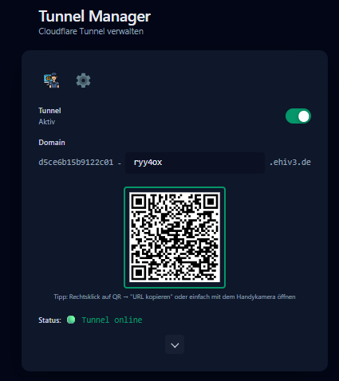

Ausgehende Verbindung statt direkter Freigabe
Der Zugang wird vom eHive One nach außen aufgebaut. Veröffentlicht werden nur dafür vorgesehene Weboberflächen. Die lokale Geräteoberfläche wird nicht über eine allgemeine Portfreigabe ins Internet gestellt.
Zugang kontrollieren
Die Adresse enthält einen gerätebezogenen Anteil und einen persönlichen Hash. Zusätzlich schützt ein Passwort den Webzugriff. Wird ein Link weitergegeben, kann der Hash erneuert werden.
Supportzugänge zeitlich begrenzen
Für Servicefälle lassen sich temporäre Zugänge einrichten. Nach Abschluss müssen sie wieder entfernt werden. SSH bleibt ein gesonderter Serviceweg und sollte nur gezielt aktiviert werden.